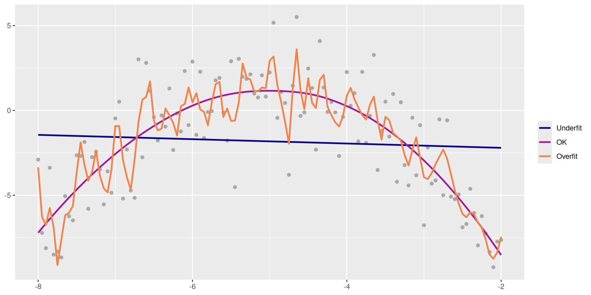
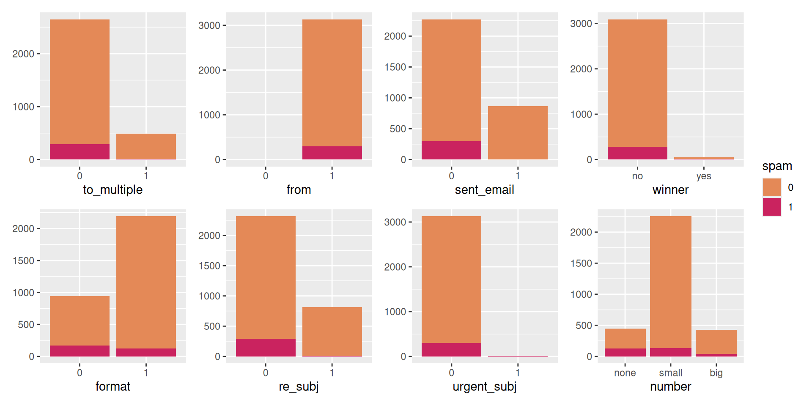
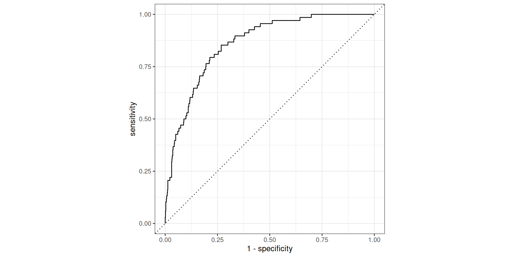
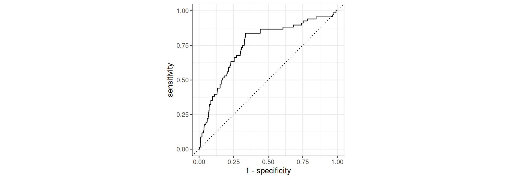
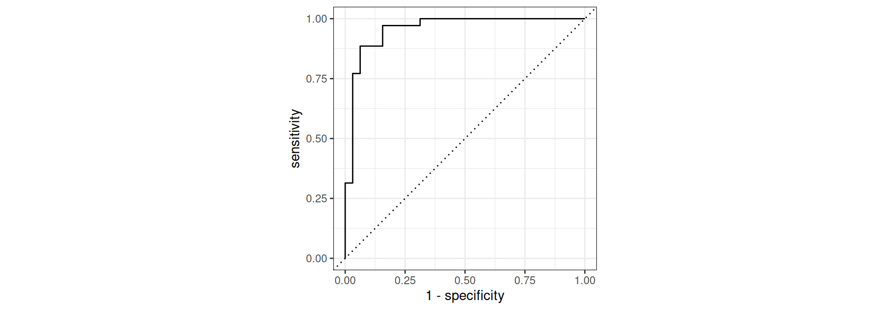
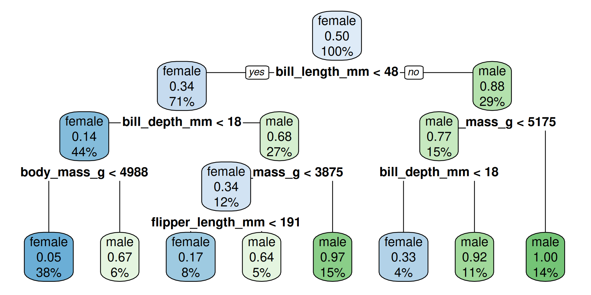
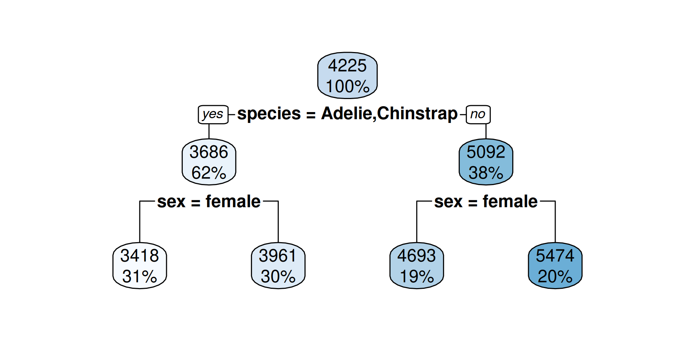
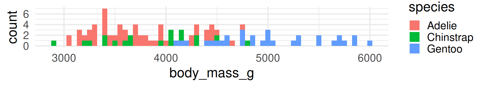
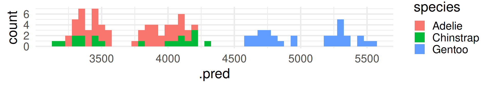
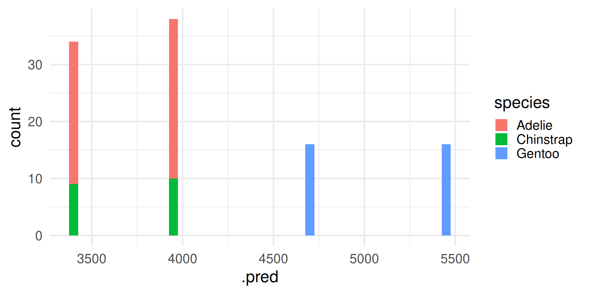

W#09: Prediction (Building a Spam Filter), Classification and Regression with Decision Trees
Packages used here
Prediction Example: Building a spam filter
- Data: Set of emails and we know
- if each email is spam or not
- several other features
- Use logistic regression to predict the probability that an incoming email is spam
- Use model selection to pick the model with the best predictive performance
- Building a model to predict the probability that an email is spam is only half of the battle! We also need a decision rule about which emails get flagged as spam (e.g. what probability should we use as out cutoff?)
- A simple approach: choose a single threshold probability and any email that exceeds that probability is flagged as spam
Emails: Use all predictors
logistic_reg() |>
set_engine("glm") |>
fit(spam ~ ., data = email, family = "binomial") |>
tidy() |>
print(n = 22)Warning: glm.fit: fitted probabilities numerically 0 or 1 occurred# A tibble: 22 × 5
term estimate std.error statistic p.value
<chr> <dbl> <dbl> <dbl> <dbl>
1 (Intercept) -9.09e+1 9.80e+3 -0.00928 9.93e- 1
2 to_multiple1 -2.68e+0 3.27e-1 -8.21 2.25e-16
3 from1 -2.19e+1 9.80e+3 -0.00224 9.98e- 1
4 cc 1.88e-2 2.20e-2 0.855 3.93e- 1
5 sent_email1 -2.07e+1 3.87e+2 -0.0536 9.57e- 1
6 time 8.48e-8 2.85e-8 2.98 2.92e- 3
7 image -1.78e+0 5.95e-1 -3.00 2.73e- 3
8 attach 7.35e-1 1.44e-1 5.09 3.61e- 7
9 dollar -6.85e-2 2.64e-2 -2.59 9.64e- 3
10 winneryes 2.07e+0 3.65e-1 5.67 1.41e- 8
11 inherit 3.15e-1 1.56e-1 2.02 4.32e- 2
12 viagra 2.84e+0 2.22e+3 0.00128 9.99e- 1
13 password -8.54e-1 2.97e-1 -2.88 4.03e- 3
14 num_char 5.06e-2 2.38e-2 2.13 3.35e- 2
15 line_breaks -5.49e-3 1.35e-3 -4.06 4.91e- 5
16 format1 -6.14e-1 1.49e-1 -4.14 3.53e- 5
17 re_subj1 -1.64e+0 3.86e-1 -4.25 2.16e- 5
18 exclaim_subj 1.42e-1 2.43e-1 0.585 5.58e- 1
19 urgent_subj1 3.88e+0 1.32e+0 2.95 3.18e- 3
20 exclaim_mess 1.08e-2 1.81e-3 5.98 2.23e- 9
21 numbersmall -1.19e+0 1.54e-1 -7.74 9.62e-15
22 numberbig -2.95e-1 2.20e-1 -1.34 1.79e- 1The prediction task
- The mechanics of prediction is easy:
- Plug in values of predictors to the model equation
- Calculate the predicted value of the response variable, \(\hat{y}\)
- Getting it right is harder
- There is no guarantee the model estimates you have are correct
- Or that your model will perform as well with new data as it did with your sample data
Balance Over- and Underfitting
In a one predictor model we can show both visually:
Code
lm_fit <- linear_reg() |>
set_engine("lm") |>
fit(y4 ~ x2, data = association)
loess_fit <- loess(y4 ~ x2, data = association)
loess_overfit <- loess(y4 ~ x2, span = 0.05, data = association)
association |>
select(x2, y4) |>
mutate(
Underfit = augment(lm_fit$fit) |> select(.fitted) |> pull(),
OK = augment(loess_fit) |> select(.fitted) |> pull(),
Overfit = augment(loess_overfit) |> select(.fitted) |> pull(),
) |>
pivot_longer(
cols = Underfit:Overfit,
names_to = "fit",
values_to = "y_hat"
) |>
mutate(fit = fct_relevel(fit, "Underfit", "OK", "Overfit")) |>
ggplot(aes(x = x2)) +
geom_point(aes(y = y4), color = "darkgray") +
geom_line(aes(y = y_hat, group = fit, color = fit), size = 1) +
labs(x = NULL, y = NULL, color = NULL) +
scale_color_viridis_d(option = "plasma", end = 0.7)
Spending our data
Problem:
- There are several steps to create a useful prediction model: parameter estimation, model selection, performance assessment, etc.
- Doing all of this on the entire data we have available can lead to overfitting.
Solution: We subsets our data for different tasks, as opposed to allocating all data to parameter estimation (as we have done so far).
Splitting Data
Splitting data
- Training set:
- Sandbox for model building
- Spend most of your time using the training set to develop the model
- Majority of the data (usually 80%)
- Testing set:
- Held in reserve to determine efficacy of one or two chosen models
- Critical to look at it once, otherwise it becomes part of the modeling process
- Remainder of the data (usually 20%)
Sidenote: Splitting data is very important for the predictive questions, because we want to know how well our model performs on new data. It is not relevant for explanatory questions where we want to interpret coefficients and infer about the underlying population.
Performing the split
# Fix random numbers by setting the seed
# Enables analysis to be reproducible when random numbers are used
set.seed(1116)
# Put 80% of the data into the training set
email_split <- initial_split(email, prop = 0.80)
# Create data frames for the two sets:
train_data <- training(email_split)
test_data <- testing(email_split)A note on the seed: The seed is an arbitrary number that is used to initialize a pseudorandom number generator. The same seed will always result in the same sequence of pseudorandom numbers. This is useful for reproducibility.
Peek at the split
Rows: 3,136
Columns: 21
$ spam <fct> 0, 1, 0, 1, 0, 0, 0, 0, 0, 0, 1, 0, 0, 0, 0, 0, 0, 0, 0, …
$ to_multiple <fct> 0, 0, 0, 0, 1, 1, 0, 0, 0, 0, 0, 0, 0, 1, 0, 0, 0, 0, 0, …
$ from <fct> 1, 1, 1, 1, 1, 1, 1, 1, 1, 1, 1, 1, 1, 1, 1, 1, 1, 1, 1, …
$ cc <int> 2, 0, 0, 0, 0, 0, 0, 0, 0, 0, 0, 0, 0, 35, 0, 0, 0, 0, 0,…
$ sent_email <fct> 1, 0, 1, 0, 0, 0, 0, 0, 0, 0, 0, 0, 0, 0, 1, 0, 0, 0, 0, …
$ time <dttm> 2012-01-25 23:46:55, 2012-01-03 06:28:28, 2012-02-04 17:…
$ image <dbl> 0, 0, 0, 0, 0, 1, 0, 0, 0, 0, 0, 0, 0, 0, 0, 0, 0, 0, 0, …
$ attach <dbl> 0, 0, 0, 0, 0, 1, 0, 0, 0, 0, 0, 0, 0, 0, 0, 0, 0, 0, 0, …
$ dollar <dbl> 10, 0, 0, 0, 0, 0, 13, 0, 0, 0, 2, 0, 0, 0, 14, 0, 0, 0, …
$ winner <fct> no, no, no, no, no, no, no, yes, no, no, no, no, no, no, …
$ inherit <dbl> 0, 0, 0, 0, 0, 1, 0, 0, 0, 0, 0, 0, 0, 0, 0, 0, 0, 0, 0, …
$ viagra <dbl> 0, 0, 0, 0, 0, 0, 0, 0, 0, 0, 0, 0, 0, 0, 0, 0, 0, 0, 0, …
$ password <dbl> 0, 0, 0, 0, 0, 0, 0, 0, 0, 0, 0, 0, 0, 0, 0, 0, 3, 0, 0, …
$ num_char <dbl> 23.308, 1.162, 4.732, 42.238, 1.228, 25.599, 16.764, 10.7…
$ line_breaks <int> 477, 2, 127, 712, 30, 674, 367, 226, 98, 671, 46, 192, 67…
$ format <fct> 1, 0, 1, 1, 0, 1, 1, 1, 1, 1, 0, 1, 0, 0, 1, 1, 1, 1, 1, …
$ re_subj <fct> 1, 0, 1, 0, 0, 0, 0, 0, 0, 0, 0, 0, 1, 0, 1, 0, 0, 0, 1, …
$ exclaim_subj <dbl> 0, 0, 0, 0, 0, 0, 1, 0, 0, 0, 1, 0, 0, 0, 0, 0, 0, 0, 1, …
$ urgent_subj <fct> 0, 0, 0, 0, 0, 0, 0, 0, 0, 0, 0, 0, 0, 0, 0, 0, 0, 0, 0, …
$ exclaim_mess <dbl> 12, 0, 2, 2, 2, 31, 2, 0, 0, 1, 0, 1, 2, 0, 2, 0, 11, 1, …
$ number <fct> small, none, big, big, small, small, small, small, small,…Rows: 785
Columns: 21
$ spam <fct> 0, 0, 0, 0, 0, 0, 0, 0, 0, 0, 0, 0, 0, 0, 0, 0, 0, 0, 0, …
$ to_multiple <fct> 1, 0, 0, 0, 0, 0, 0, 0, 0, 0, 1, 0, 0, 1, 0, 0, 0, 0, 0, …
$ from <fct> 1, 1, 1, 1, 1, 1, 1, 1, 1, 1, 1, 1, 1, 1, 1, 1, 1, 1, 1, …
$ cc <int> 0, 1, 0, 1, 4, 0, 0, 0, 0, 0, 0, 0, 0, 0, 0, 0, 0, 3, 0, …
$ sent_email <fct> 1, 1, 0, 0, 0, 0, 0, 0, 0, 0, 0, 0, 0, 0, 0, 0, 0, 1, 0, …
$ time <dttm> 2012-01-01 18:55:06, 2012-01-01 20:38:32, 2012-01-02 06:…
$ image <dbl> 0, 0, 0, 0, 0, 0, 0, 0, 0, 0, 0, 0, 0, 0, 0, 0, 1, 0, 0, …
$ attach <dbl> 0, 0, 0, 0, 0, 0, 0, 0, 0, 0, 0, 0, 0, 1, 0, 0, 1, 0, 0, …
$ dollar <dbl> 0, 0, 5, 0, 0, 0, 0, 5, 4, 0, 0, 0, 21, 0, 0, 2, 9, 0, 0,…
$ winner <fct> no, no, no, no, no, no, no, no, no, no, no, no, no, no, n…
$ inherit <dbl> 0, 0, 0, 0, 0, 0, 0, 0, 1, 0, 0, 0, 0, 0, 0, 0, 0, 0, 0, …
$ viagra <dbl> 0, 0, 0, 0, 0, 0, 0, 0, 0, 0, 0, 0, 0, 0, 0, 0, 0, 0, 0, …
$ password <dbl> 0, 0, 1, 0, 0, 0, 0, 0, 0, 1, 0, 0, 0, 0, 0, 0, 0, 0, 2, …
$ num_char <dbl> 4.837, 15.075, 18.037, 45.842, 11.438, 1.482, 14.431, 0.9…
$ line_breaks <int> 193, 354, 345, 881, 125, 24, 296, 13, 192, 14, 32, 30, 55…
$ format <fct> 1, 1, 1, 1, 0, 1, 1, 0, 1, 0, 0, 0, 1, 1, 1, 1, 1, 1, 1, …
$ re_subj <fct> 0, 1, 0, 1, 1, 0, 0, 0, 0, 0, 1, 0, 0, 0, 1, 0, 0, 1, 0, …
$ exclaim_subj <dbl> 0, 0, 1, 0, 0, 0, 0, 0, 0, 0, 0, 0, 0, 0, 0, 0, 0, 0, 0, …
$ urgent_subj <fct> 0, 0, 0, 0, 0, 0, 0, 0, 0, 0, 0, 0, 0, 0, 0, 0, 0, 0, 0, …
$ exclaim_mess <dbl> 1, 10, 20, 5, 2, 0, 0, 0, 6, 0, 0, 1, 3, 0, 4, 0, 1, 0, 1…
$ number <fct> big, small, small, big, small, none, small, small, small,…Workflow of Predictive Modeling
Fit a model to the training dataset
email_fit <- logistic_reg() |>
set_engine("glm") |>
fit(spam ~ ., data = train_data, family = "binomial")Warning: glm.fit: fitted probabilities numerically 0 or 1 occurredWe get a warning and should explore the reasons for 0 or 1 probability.
Look at categorical predictors

Closer look at from and sent_email.
Counting cases
from: Whether the message was listed as from anyone (this is usually set by default for regular outgoing email).
# A tibble: 3 × 3
spam from n
<fct> <fct> <int>
1 0 1 2837
2 1 0 3
3 1 1 296No non-spam mails without from.
- There is incomplete separation in the data for those variables.
- That mean we have a sure prediction probabilities (0 or 1). (That is the warning. Also, these variables have the highest coefficients.)
- This is not what we assume about reality. Maybe our sample is too small to see it.
- Therefore we exclude these variables.
Look at numerical variables
# A tibble: 22 × 4
# Groups: name [11]
name spam mean sd
<chr> <fct> <dbl> <dbl>
1 attach 0 0.124 0.775
2 attach 1 0.227 0.620
3 cc 0 0.393 2.62
4 cc 1 0.388 3.25
5 dollar 0 1.56 5.33
6 dollar 1 0.779 3.01
7 exclaim_mess 0 6.68 50.2
8 exclaim_mess 1 8.75 88.4
9 exclaim_subj 0 0.0783 0.269
10 exclaim_subj 1 0.0769 0.267
11 image 0 0.0536 0.503
12 image 1 0.00334 0.0578
13 inherit 0 0.0352 0.216
14 inherit 1 0.0702 0.554
15 line_breaks 0 247. 326.
16 line_breaks 1 108. 321.
17 num_char 0 11.4 14.9
18 num_char 1 5.63 15.7
19 password 0 0.112 0.938
20 password 1 0.0201 0.182
21 viagra 0 0 0
22 viagra 1 0.0268 0.463 viagra has no mentions in non-spam emails.
- We should exclude this variable for the same reason.
Fit a model to the training dataset
email_fit <- logistic_reg() |>
set_engine("glm") |>
fit(
spam ~ . - from - sent_email - viagra,
data = train_data,
family = "binomial"
)Warning: glm.fit: fitted probabilities numerically 0 or 1 occurredWe still get a warning, but without very high coefficients.
The fitted model
parsnip model object
Call: stats::glm(formula = spam ~ . - from - sent_email - viagra, family = stats::binomial,
data = data)
Coefficients:
(Intercept) to_multiple1 cc time image
-9.867e+01 -2.505e+00 1.944e-02 7.396e-08 -2.854e+00
attach dollar winneryes inherit password
5.070e-01 -6.440e-02 2.170e+00 4.499e-01 -7.065e-01
num_char line_breaks format1 re_subj1 exclaim_subj
5.870e-02 -5.420e-03 -9.017e-01 -2.995e+00 1.002e-01
urgent_subj1 exclaim_mess numbersmall numberbig
3.572e+00 1.009e-02 -8.518e-01 -1.329e-01
Degrees of Freedom: 3135 Total (i.e. Null); 3117 Residual
Null Deviance: 1974
Residual Deviance: 1447 AIC: 1485Predict with the testing dataset
Predicting the raw values (log-odds)
1 2 3 4 5 6
-4.942500 -6.312226 -3.938487 -6.688992 -4.399541 -1.587700 Predicting probabilities
Relate back to the model concept
email_pred <-
predict(email_fit, test_data, type = "prob") |>
select(spam_prob = .pred_1) |>
mutate(
spam_logodds = predict(email_fit, test_data, type = "raw"),
spam_odds = exp(spam_logodds)
) |>
bind_cols(predict(email_fit, test_data)) |>
# Append real data
bind_cols(test_data |> select(spam))
email_pred# A tibble: 785 × 5
spam_prob spam_logodds spam_odds .pred_class spam
<dbl> <dbl> <dbl> <fct> <fct>
1 0.00709 -4.94 0.00714 0 0
2 0.00181 -6.31 0.00181 0 0
3 0.0191 -3.94 0.0195 0 0
4 0.00124 -6.69 0.00124 0 0
5 0.0121 -4.40 0.0123 0 0
6 0.170 -1.59 0.204 0 0
7 0.0410 -3.15 0.0427 0 0
8 0.139 -1.83 0.161 0 0
9 0.0617 -2.72 0.0657 0 0
10 0.0983 -2.22 0.109 0 0
# ℹ 775 more rows- The raw predictions are the log-odds.
- From which we can compute the odds.
- From which the probability is computed. Here it is done by
predict. - The
.pred_classprediction is when the probability > 0.5.- What does it mean for the odds and the log-odds?
Answers: odds > 1, log-odds > 0
Another look
# A tibble: 785 × 5
spam_prob spam_logodds spam_odds .pred_class spam
<dbl> <dbl> <dbl> <fct> <fct>
1 0.903 2.23 9.29 1 1
2 0.833 1.60 4.98 1 0
3 0.825 1.55 4.71 1 1
4 0.733 1.01 2.75 1 1
5 0.683 0.766 2.15 1 1
6 0.626 0.517 1.68 1 1
7 0.614 0.464 1.59 1 0
8 0.597 0.392 1.48 1 1
9 0.538 0.153 1.17 1 1
10 0.537 0.148 1.16 1 0
11 0.510 0.0404 1.04 1 0
12 0.491 -0.0345 0.966 0 0
13 0.490 -0.0407 0.960 0 0
14 0.489 -0.0453 0.956 0 1
15 0.483 -0.0698 0.933 0 1
16 0.473 -0.107 0.899 0 0
17 0.463 -0.150 0.861 0 0
18 0.457 -0.174 0.840 0 0
19 0.447 -0.212 0.809 0 0
20 0.447 -0.214 0.808 0 1
# ℹ 765 more rowsWe see false positives and false negatives.
Evaluate the performance
Receiver operating characteristic (ROC) curve1 which plots true positive rate (sensitivity) vs. false positive rate (1 - specificity)
Evaluate the performance
Find the area under the curve (AUC).
In calculus language:
\(\int_0^1 \text{TPR}(\text{FPR}) d\text{FPR}\)
Remember:
- TPR = True Positive Rate = sensitivity
- FPR = False Positive Rate = 1 - specificity
- specificity is the true negative rate.
Feature engineering
Feature engineering
- We prefer simple models when possible, but parsimony does not mean sacrificing accuracy (or predictive performance) in the interest of simplicity
- Variables that go into the model and how they are represented are critical to the success of the model
- Feature engineering is getting creative with our predictors in an effort to make them more useful for our model (to increase its predictive performance)
Modeling workflow, revisited
Create a recipe for feature engineering steps to be applied to the training data
- The
tidymodelsway (similar to a pipeline in python’s scikit-learn).
- The
Fit the model to the training data after these steps have been applied
Using the model estimates from the training data, predict outcomes for the test data
Evaluate the performance of the model on the test data
Recipes
Initiate a recipe
email_rec <- recipe(
spam ~ ., # formula
data = train_data # data to use for cataloguing names and types of variables
)
summary(email_rec) |> print(n = 21)# A tibble: 21 × 4
variable type role source
<chr> <list> <chr> <chr>
1 to_multiple <chr [3]> predictor original
2 from <chr [3]> predictor original
3 cc <chr [2]> predictor original
4 sent_email <chr [3]> predictor original
5 time <chr [1]> predictor original
6 image <chr [2]> predictor original
7 attach <chr [2]> predictor original
8 dollar <chr [2]> predictor original
9 winner <chr [3]> predictor original
10 inherit <chr [2]> predictor original
11 viagra <chr [2]> predictor original
12 password <chr [2]> predictor original
13 num_char <chr [2]> predictor original
14 line_breaks <chr [2]> predictor original
15 format <chr [3]> predictor original
16 re_subj <chr [3]> predictor original
17 exclaim_subj <chr [2]> predictor original
18 urgent_subj <chr [3]> predictor original
19 exclaim_mess <chr [2]> predictor original
20 number <chr [3]> predictor original
21 spam <chr [3]> outcome originalThe object email_rec only includes meta-data (columns names and types)!
Remove certain variables
Feature engineer date
- The date-time may not be such an interesting predictor.
- It could only bring in a general trend over time
- Often decomposing the date to the month or the day of the week (dow) is more interesting.
step_datecan easily extract these
Create dummy variables
- Use helper functions like
all_nominalorall_outcomesfromtidymodelsfor column selection.
Remove zero variance variables
Variables that contain only a single value.
Full recipe
email_rec <- recipe(
spam ~ ., # formula
data = train_data # data to use for cataloguing names and types of variables
) |>
step_rm(from, sent_email, viagra) |>
step_date(time, features = c("dow", "month")) |>
step_rm(time) |>
step_dummy(all_nominal(), -all_outcomes()) |>
step_zv(all_predictors())
print(email_rec)── Recipe ──────────────────────────────────────────────────────────────────────── Inputs Number of variables by roleoutcome: 1
predictor: 20── Operations • Variables removed: from, sent_email, viagra• Date features from: time• Variables removed: time• Dummy variables from: all_nominal() -all_outcomes()• Zero variance filter on: all_predictors()Recipes are only metadata
The object email_rec only includes meta-data of the data frame it shall work on. Metadata here means
- a formula
- column names
- columns types
No actual data transformation has happened yet!
Building workflows
Define model
Define workflow
Workflows bring together models and recipes so that they can be easily applied to both the training and test data.
══ Workflow ════════════════════════════════════════════════════════════════════
Preprocessor: Recipe
Model: logistic_reg()
── Preprocessor ────────────────────────────────────────────────────────────────
5 Recipe Steps
• step_rm()
• step_date()
• step_rm()
• step_dummy()
• step_zv()
── Model ───────────────────────────────────────────────────────────────────────
Logistic Regression Model Specification (classification)
Computational engine: glm Fit model to training data
# A tibble: 27 × 5
term estimate std.error statistic p.value
<chr> <dbl> <dbl> <dbl> <dbl>
1 (Intercept) -0.651 0.254 -2.57 1.03e- 2
2 cc 0.0214 0.0229 0.936 3.49e- 1
3 image -2.99 1.31 -2.28 2.28e- 2
4 attach 0.512 0.116 4.41 1.03e- 5
5 dollar -0.0651 0.0307 -2.12 3.40e- 2
6 inherit 0.440 0.205 2.15 3.14e- 2
7 password -0.723 0.302 -2.39 1.67e- 2
8 num_char 0.0585 0.0240 2.43 1.50e- 2
9 line_breaks -0.00548 0.00139 -3.94 8.24e- 5
10 exclaim_subj 0.0998 0.268 0.373 7.09e- 1
11 exclaim_mess 0.0103 0.00198 5.20 2.02e- 7
12 to_multiple_X1 -2.56 0.339 -7.56 4.11e-14
13 winner_yes 2.24 0.430 5.21 1.90e- 7
14 format_X1 -0.953 0.157 -6.06 1.38e- 9
15 re_subj_X1 -3.00 0.444 -6.76 1.39e-11
16 urgent_subj_X1 3.69 1.15 3.20 1.37e- 3
17 number_small -0.840 0.162 -5.20 1.98e- 7
18 number_big -0.0915 0.244 -0.375 7.07e- 1
19 time_dow_Mon -0.326 0.303 -1.08 2.82e- 1
20 time_dow_Tue 0.0813 0.275 0.296 7.67e- 1
21 time_dow_Wed -0.260 0.275 -0.946 3.44e- 1
22 time_dow_Thu -0.220 0.279 -0.788 4.31e- 1
23 time_dow_Fri -0.0612 0.275 -0.223 8.24e- 1
24 time_dow_Sat 0.0646 0.292 0.221 8.25e- 1
25 time_month_Feb 0.760 0.178 4.26 2.03e- 5
26 time_month_Mar 0.506 0.178 2.85 4.40e- 3
27 time_month_Apr -12.0 394. -0.0306 9.76e- 1Note: email_fit builds on the workflow object email_wflow defined before, which specified a model and a recipe.
Make predictions for test data
# A tibble: 785 × 23
.pred_0 .pred_1 spam to_multiple from cc sent_email time
<dbl> <dbl> <fct> <fct> <fct> <int> <fct> <dttm>
1 0.993 0.00653 0 1 1 0 1 2012-01-01 18:55:06
2 0.998 0.00169 0 0 1 1 1 2012-01-01 20:38:32
3 0.987 0.0127 0 0 1 0 0 2012-01-02 06:42:16
4 0.999 0.000825 0 0 1 1 0 2012-01-02 16:12:51
5 0.991 0.00876 0 0 1 4 0 2012-01-02 17:45:36
6 0.878 0.122 0 0 1 0 0 2012-01-02 22:55:03
7 0.959 0.0414 0 0 1 0 0 2012-01-03 02:07:17
8 0.852 0.148 0 0 1 0 0 2012-01-03 06:41:35
9 0.938 0.0619 0 0 1 0 0 2012-01-03 17:02:35
10 0.896 0.104 0 0 1 0 0 2012-01-03 12:14:51
# ℹ 775 more rows
# ℹ 15 more variables: image <dbl>, attach <dbl>, dollar <dbl>, winner <fct>,
# inherit <dbl>, viagra <dbl>, password <dbl>, num_char <dbl>,
# line_breaks <int>, format <fct>, re_subj <fct>, exclaim_subj <dbl>,
# urgent_subj <fct>, exclaim_mess <dbl>, number <fct>Note: email_pred builds on the fit object email_fit defined and computed before, which in turn builds on workflow defined before, which specified a model and a recipe.
Summary of the workflow steps
- Define a model
- Define a recipe for data preprocessing, feature engineering and selection
- Define a workflow that brings model and recipe together
- Nothing is computed so far!
- Fit the workflow with the training data
- Make predictions for the test data
The purpose of modularization is to separate the different tasks and to make it easy to re-use and combine parts of it, e.g. to test and compare different versions or to do cross-validation with different splits of testing and training data.
Evaluate the performance

Evaluate the performance
# A tibble: 1 × 3
.metric .estimator .estimate
<chr> <chr> <dbl>
1 roc_auc binary 0.860This is better than our former model (without the feature engineering workflow), which had AUC = 0.857.
From probabilities to decisions
Cutoff probability: 0.5
Suppose we decide to label an email as spam if the model predicts the probability of spam to be more than 0.5. (That is the default.)
Confusion matrix:
cutoff_prob <- 0.5
email_pred |>
mutate(
spam = if_else(spam == 1, "Email is spam", "Email is not spam"),
spam_pred = if_else(
.pred_1 > cutoff_prob,
"Email labelled spam",
"Email labelled not spam"
)
) |>
count(spam_pred, spam) |>
pivot_wider(names_from = spam_pred, values_from = n) |>
select(1, 3, 2) |>
slice(c(2, 1)) |> # reorder rows and cols to fit convention
knitr::kable()| spam | Email labelled spam | Email labelled not spam |
|---|---|---|
| Email is spam | 14 | 54 |
| Email is not spam | 10 | 707 |
Confusion Matrix, Sensitivity, Specificity
| spam | Email labelled spam | Email labelled not spam |
|---|---|---|
| Email is spam | 14 | 54 |
| Email is not spam | 10 | 707 |
Sensitivity: 14/(14+54) = 0.206
Specificity: 707/(707+10) = 0.986
Cutoff probability: 0.25
Suppose we decide to label an email as spam if the model predicts the probability of spam to be more than 0.25.
Confusion matrix:
| spam | Email labelled spam | Email labelled not spam |
|---|---|---|
| Email is spam | 32 | 36 |
| Email is not spam | 61 | 656 |
Sensitivity: 32/(32+36) = 0.471
Specificity: 656/(656 + 61) = 0.915
Cutoff probability: 0.75
Suppose we decide to label an email as spam if the model predicts the probability of spam to be more than 0.75.
Confusion matrix:
| spam | Email labelled spam | Email labelled not spam |
|---|---|---|
| Email is spam | 3 | 65 |
| Email is not spam | 1 | 716 |
Sensitivity: 3/(3+65) = 0.044
Specificity: 716/(716+1) = 0.999
Compare: Check our very first model
Using the modular sturcutr: We make a new simple recipe and draw workflow and fitting re-using the same specified logisitc regression model email_mod.
simple_email_rec <- recipe(
spam ~ num_char, # formula
data = train_data # data to use for cataloguing names and types of variables
)
simple_email_pred <-
workflow() |>
add_model(email_mod) |>
add_recipe(simple_email_rec) |>
fit(data = train_data) |>
predict(test_data, type = "prob") |>
bind_cols(test_data |> select(spam, num_char, time))
simple_email_pred# A tibble: 785 × 5
.pred_0 .pred_1 spam num_char time
<dbl> <dbl> <fct> <dbl> <dttm>
1 0.889 0.111 0 4.84 2012-01-01 18:55:06
2 0.936 0.0644 0 15.1 2012-01-01 20:38:32
3 0.945 0.0547 0 18.0 2012-01-02 06:42:16
4 0.989 0.0113 0 45.8 2012-01-02 16:12:51
5 0.922 0.0784 0 11.4 2012-01-02 17:45:36
6 0.868 0.132 0 1.48 2012-01-02 22:55:03
7 0.933 0.0667 0 14.4 2012-01-03 02:07:17
8 0.864 0.136 0 0.978 2012-01-03 06:41:35
9 0.905 0.0953 0 7.79 2012-01-03 17:02:35
10 0.864 0.136 0 0.978 2012-01-03 12:14:51
# ℹ 775 more rowsEvaluate the performance

# A tibble: 1 × 3
.metric .estimator .estimate
<chr> <chr> <dbl>
1 roc_auc binary 0.753Conclusion: It is not as good compared to AUC 0.86
Compare: Predict Penguins’ Sex
Following all the steps introduced before:
set.seed(1)
# Put 80% of the data into the training set
peng_split <- initial_split(penguins, prop = 0.80)
# Create data frames for the two sets:
train_data_peng <- training(peng_split)
test_data_peng <- testing(peng_split)
# Create a recipe for the model
peng_rec <- recipe(
sex ~ .,
data = train_data_peng
) |>
step_naomit(all_predictors()) |>
step_dummy(all_nominal(), -all_outcomes()) |>
step_zv(all_predictors())
# Create a logistic regression model
peng_mod <- logistic_reg() |>
set_engine("glm")
# Create a workflow
peng_wflow <- workflow() |>
add_model(peng_mod) |>
add_recipe(peng_rec)
# Fitting model to training data
peng_fit <- peng_wflow |>
fit(data = train_data_peng)
# Make predictions for test data
peng_pred <- peng_fit |>
predict(test_data_peng, type = "prob") |>
bind_cols(test_data_peng)Penguins: Evaluate Performance

Penguins: Cutoff probability 0.5
Confusion matrix:
cutoff_prob <- 0.5
peng_pred |>
mutate(
sex = if_else(sex == "male", "Penguin is male", "Penguin is female"),
sex_pred = if_else(
.pred_male > cutoff_prob,
"Penguin labelled male",
"Penguin labelled female"
)
) |>
count(sex_pred, sex) |>
pivot_wider(names_from = sex_pred, values_from = n) |>
select(1, 3, 2) |>
slice(c(2, 1)) |> # reorder rows and cols to fit convention
knitr::kable()| sex | Penguin labelled male | Penguin labelled female |
|---|---|---|
| Penguin is male | 31 | 4 |
| Penguin is female | 4 | 28 |
Sensitivity: 31/(31+4) = 0.886
Specificity: 28/(28+4) = 0.875
Penguins: Cutoff probability 0.25
Confusion matrix:
cutoff_prob <- 0.25
peng_pred |>
mutate(
sex = if_else(sex == "male", "Penguin is male", "Penguin is female"),
sex_pred = if_else(
.pred_male > cutoff_prob,
"Penguin labelled male",
"Penguin labelled female"
)
) |>
count(sex_pred, sex) |>
pivot_wider(names_from = sex_pred, values_from = n) |>
select(1, 3, 2) |>
slice(c(2, 1)) |> # reorder rows and cols to fit convention
knitr::kable()| sex | Penguin labelled male | Penguin labelled female |
|---|---|---|
| Penguin is male | 34 | 1 |
| Penguin is female | 7 | 25 |
Sensitivity: 34/(34+1) = 0.971
Specificity: 25/(25+7) = 0.781
Penguins: Cutoff probability 0.75
Confusion matrix:
cutoff_prob <- 0.75
peng_pred |>
mutate(
sex = if_else(sex == "male", "Penguin is male", "Penguin is female"),
sex_pred = if_else(
.pred_male > cutoff_prob,
"Penguin labelled male",
"Penguin labelled female"
)
) |>
count(sex_pred, sex) |>
pivot_wider(names_from = sex_pred, values_from = n) |>
select(1, 3, 2) |>
slice(c(2, 1)) |> # reorder rows and cols to fit convention
knitr::kable()| sex | Penguin labelled male | Penguin labelled female |
|---|---|---|
| Penguin is male | 29 | 6 |
| Penguin is female | 2 | 30 |
Sensitivity: 29/(29+6) = 0.829
Specificity: 30/(30+2) = 0.938
Penguins vs. Emails
Why are the differences between different cutoff probabilities smaller for penguins than for emails?
Answer: The response variable sex in penguins is more balanced (about 50% males and 50% females) than the response variable spam in email.
A naive classifier that classifies everything as the majority class would achieve about 50% accuracy for penguins, but about 88% accuracy for email.
Classification: Compare logistic regression and decision tree
Purpose of the section
- Go again through the modeling workflow (with
tidymodels) and see that large parts are identical - Look again at the coefficients of a logistic regression model
- Learn the basic idea of a decision tree (you will not learn the details here)
- Do the classification with both models and compare the confusion matrices
Specify recipe and models
For both logistic regression and decision tree:
- We specify a recipe to predict
sexwith all available variables inpenguins- In typical model development, more pre-processing steps are done.
Logistic Regression
peng_logreg specifies to fit with glm (generalized linear model from base R)
Split and fit
For logistic regression and decision tree:
Split into test and training data
Look at fitted logistic regression
# A tibble: 9 × 5
term estimate std.error statistic p.value
<chr> <dbl> <dbl> <dbl> <dbl>
1 (Intercept) -90.4 16.7 -5.41 0.0000000632
2 speciesChinstrap -6.06 1.90 -3.19 0.00142
3 speciesGentoo -8.65 3.49 -2.48 0.0132
4 islandDream 0.752 1.15 0.656 0.512
5 islandTorgersen 0.380 1.13 0.335 0.737
6 bill_length_mm 0.532 0.150 3.56 0.000378
7 bill_depth_mm 1.79 0.456 3.93 0.0000866
8 flipper_length_mm 0.0552 0.0620 0.891 0.373
9 body_mass_g 0.00693 0.00162 4.27 0.0000193 - What do the categorical predictors tell us? Which are signigficant?
- What do the numerical predictors tell us? Which are signigficant?
- Why is the coefficient for
body_mass_gso small, but highly significant?
Categorical predictors: We have 3 species, 3 island. So, we see 4 new variables, 2 for species and 2 for island (the third is the reference category). Species are significant (p < 0.05), but islands not.
Numerical predictors: flipper_length_mm is insignificant, though its coefficient is larger than for body_mass_g. Reason: values of body_mass_g are larger than those of flipper_length_mm. Body mass differs by much more grams than flipper length differs by millimeters.
What is a decision tree?
══ Workflow [trained] ══════════════════════════════════════════════════════════
Preprocessor: Recipe
Model: decision_tree()
── Preprocessor ────────────────────────────────────────────────────────────────
1 Recipe Step
• step_rm()
── Model ───────────────────────────────────────────────────────────────────────
n=234 (6 observations deleted due to missingness)
node), split, n, loss, yval, (yprob)
* denotes terminal node
1) root 234 117 female (0.50000000 0.50000000)
2) bill_length_mm< 48.15 166 57 female (0.65662651 0.34337349)
4) bill_depth_mm< 18.05 103 14 female (0.86407767 0.13592233)
8) body_mass_g< 4987.5 88 4 female (0.95454545 0.04545455) *
9) body_mass_g>=4987.5 15 5 male (0.33333333 0.66666667) *
5) bill_depth_mm>=18.05 63 20 male (0.31746032 0.68253968)
10) body_mass_g< 3875 29 10 female (0.65517241 0.34482759)
20) flipper_length_mm< 190.5 18 3 female (0.83333333 0.16666667) *
21) flipper_length_mm>=190.5 11 4 male (0.36363636 0.63636364) *
11) body_mass_g>=3875 34 1 male (0.02941176 0.97058824) *
3) bill_length_mm>=48.15 68 8 male (0.11764706 0.88235294)
6) body_mass_g< 5175 35 8 male (0.22857143 0.77142857)
12) bill_depth_mm< 18 9 3 female (0.66666667 0.33333333) *
13) bill_depth_mm>=18 26 2 male (0.07692308 0.92307692) *
7) body_mass_g>=5175 33 0 male (0.00000000 1.00000000) *- A sequence of rules for yes/no decisions
- Selects variables and thresholds which separate the data to predict (here
sex) best - Further details are not the scope of this course
Show rules
We “dig out” the original fitted rpart-object from the workflow-object with peng_tree_fit$fit$fit$fit and plot it:
..y
0.05 when bill_length_mm < 48 & body_mass_g < 4988 & bill_depth_mm < 18
0.17 when bill_length_mm < 48 & body_mass_g < 3875 & bill_depth_mm >= 18 & flipper_length_mm < 191
0.33 when bill_length_mm >= 48 & body_mass_g < 5175 & bill_depth_mm < 18
0.64 when bill_length_mm < 48 & body_mass_g < 3875 & bill_depth_mm >= 18 & flipper_length_mm >= 191
0.67 when bill_length_mm < 48 & body_mass_g >= 4988 & bill_depth_mm < 18
0.92 when bill_length_mm >= 48 & body_mass_g < 5175 & bill_depth_mm >= 18
0.97 when bill_length_mm < 48 & body_mass_g >= 3875 & bill_depth_mm >= 18
1.00 when bill_length_mm >= 48 & body_mass_g >= 5175 - The first three rules would predict
femalefor all observations - The last five rules would predict
malefor all observations
The order of male and female is because sex is a factor with the first level female and the second level male. The probabilities in front of the rule-text are for the second level: male.
Visualize tree

How to read?
- The percentage is the fraction of the total cases in this group
- The probability-number is the fraction of observations which are male in the group
maleoffemaleand color would match the predicted outcome at this decision node
Make predictions for test data
- The logistic regression has more correct predictions.
- Warning: The function
conf_mat(fromyardstickoftidymodels) shows the transposed confusion matrix compared with Wikipedia:Confusion Matrix. Inconf_mat, the true conditions are in columns. The wikipedia convention is that columns are the predicted conditions.
Regression: Compare linear regression and decision tree
Purpose of the section
- Go again through the modeling workflow (with
tidymodels) and see that large parts are identical - Look again at the coefficients of a linear model
- See how the decision tree looks like for a regression problem
- Compare the two most common performance measures for regression models: Root Mean Squared Error (RMSE) and R-squared
Specify recipe and models
- We specify a recipe to predict
body_mass_gwith all available variables inpenguinsand put it in a workflow- Typically, more pre-processing steps are specified here, but we are mostly fine
We can re-use the split and the training and test set.
Fit Regression Models
Look at fitted linear regression
# A tibble: 9 × 5
term estimate std.error statistic p.value
<chr> <dbl> <dbl> <dbl> <dbl>
1 (Intercept) -829. 701. -1.18 2.38e- 1
2 speciesChinstrap -268. 109. -2.47 1.44e- 2
3 speciesGentoo 1010. 164. 6.15 3.52e- 9
4 islandDream -14.5 70.0 -0.208 8.36e- 1
5 islandTorgersen -21.4 75.7 -0.283 7.77e- 1
6 bill_length_mm 19.8 8.55 2.32 2.13e- 2
7 bill_depth_mm 53.7 23.9 2.25 2.56e- 2
8 flipper_length_mm 13.6 3.54 3.84 1.58e- 4
9 sexmale 393. 58.5 6.71 1.57e-10- What do the categorical predictors tell us? Which are signigficant?
- What do the numerical predictors tell us? Which are signigficant?
Categorical predictors: We have 3 species, 3 island and 2 sex. So, we see 5 new variables. Species and sex are significant, but islands not.
Numerical predictors: All 3 are significant.
Show rules
..y
3418 when species is Adelie or Chinstrap & sex is female
3961 when species is Adelie or Chinstrap & sex is male
4693 when species is Gentoo & sex is female
5474 when species is Gentoo & sex is male- For each terminal node a certain value is predicted (the mean of the remaining penguins)
Visualize tree

How to read?
- The percentage is the fraction of the total cases in this group
- The number is the predicted outcome (mean body mass) at this decision node
Make predictions for test data
Linear Regression
peng_linreg_pred <-
predict(peng_linreg_fit, peng_test) |>
bind_cols(peng_test)
peng_linreg_pred |>
select(.pred, body_mass_g, everything()) |>
slice(10 * (1:10)) # show selected rows# A tibble: 10 × 9
.pred body_mass_g species island bill_length_mm bill_depth_mm
<dbl> <int> <fct> <fct> <dbl> <dbl>
1 3349. 3700 Adelie Torgersen 36.6 17.8
2 3979. 3950 Adelie Dream 38.8 20
3 3902. 3800 Adelie Dream 36.3 19.5
4 4106. 3875 Adelie Torgersen 41.4 18.5
5 3499. 3400 Adelie Dream 40.2 17.1
6 4597. 4150 Gentoo Biscoe 42 13.5
7 4688. 4200 Gentoo Biscoe 45.5 13.9
8 4929. 4850 Gentoo Biscoe 48.5 15
9 4014. 4150 Chinstrap Dream 52 19
10 4108. 4050 Chinstrap Dream 50.7 19.7
# ℹ 3 more variables: flipper_length_mm <int>, sex <fct>, year <int>Decision Tree
peng_regtree_pred <-
predict(peng_regtree_fit, peng_test) |>
bind_cols(peng_test)
peng_regtree_pred |>
select(.pred, body_mass_g, species, sex) |>
slice(10 * (1:10)) # show same selected rows# A tibble: 10 × 4
.pred body_mass_g species sex
<dbl> <int> <fct> <fct>
1 3418 3700 Adelie female
2 3961. 3950 Adelie male
3 3961. 3800 Adelie male
4 3961. 3875 Adelie male
5 3418 3400 Adelie female
6 4693. 4150 Gentoo female
7 4693. 4200 Gentoo female
8 4693. 4850 Gentoo female
9 3961. 4150 Chinstrap male
10 3961. 4050 Chinstrap male Regression Performance Evaluation
R-squared: Percentage of variability in body_mass_g explained by the model
Linear Regression
Root Mean Squared Error (RMSE): \(\text{RMSE} = \sqrt{\frac{1}{n}\sum_{i = 1}^n (y_i - \hat{y}_i)^2}\)
where \(\hat{y}_i\) is the predicted value and \(y_i\) the true value. (The name RMSE is descriptive.)
Which model is better in prediction? Linear regression. The R-squared is higher.
Should RMSE be high or low?
Low. The lower the error, the better the model’s prediction.
It is the other way round than R-squared! Do not confuse them.
Notes:
- The common method to fit a linear model is the ordinary least squares (OLS) method
- That means the fitted parameters should deliver the lowest possible sum of squared errors (SSE) between predicted and observed values.
- Minimizing the sum of squared errors (SSE) is identical to minimizing the mean of squared errors (MSE) because it only adds the factor \(1/n\).
- Minimizing the mean of squared errors (MSE) is identical to minimizing the root mean of squared errors (RMSE) because the square root is strictly monotone function.
Conclusion: RMSE can be seen as a definition of the OLS optimization goal.
Interpreting RMSE
In contrast to R-squared, RMSE can only be interpreted with knowledge about the range and of the response variable! It also has the same unit (grams for body_mass_g).



The RMSE shows many grams predicted values deviate from the true value on average. (Taking the squaring of differences and root of the average into account.)
What do we mean by “model”? How to be specific
“Model” in Statistical Learning
We already had the difference between variable-based and agent-based models in earlier lectures.
But even in the variable-based model setting of statistical learning, the term model can be more or less abstract:
- Very general: \(Y = f(X_1, \dots, X_m) + \varepsilon\) where \(Y\) is the response variable and \(X_i\) are features which we put in our model: the abstract and unknown function \(f\).
\(\varepsilon\) is the error which we can never explain usually do not know. - More specific: The model \(f\) could already be of a specific type, like logistic regression, a decision tree or other functional forms. As this need not be the real function we may call it assumed model \(\hat f\) For example a linear model \(\hat f(X_1, \dots, X_m) = \beta_0 + \beta_1 X_1 + \dots + \beta_m X_m + \varepsilon\). Now, the model has specified parameters which values are unknown.
More specific: Fitted model
- Fitted model: When we have a data set with values for \(Y, X_1, \dots, X_m\) we can fit values for the parameters \(\hat\beta_0, \dots, \hat\beta_m\) to the data. This is the fitted model \(\hat f\). This is called parameter estimation: We estimate \(\hat\beta_0, \dots, \hat\beta_m\) with the hope that they match the real values \(\beta_0, \dots, \beta_m\) and that the linear model \(\hat f\) matches the real function \(f\).
- Now we could specify further to fit a specific parameterized model with a specific algorithm, and a specific set of hyperparameters, and maybe more …
Sometimes model means only a certain aspect of all these, for example the formula like sex ~ bill_length_mm + bill_depth_mm + flipper_length_mm + body_mass_g + species + island
Take away: “Model” can mean things with very different granularity. That is OK because they are all related and all fit the definition of being a simplified representation of reality.
Be prepared to specify what you mean when you are talking about a model.

MDSSB-DSCO-02: Data Science Concepts